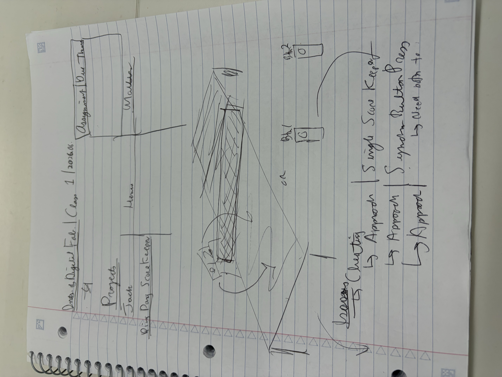

Week 1: Final Project Proposal
Idea 1: Remote Controlled Ping-Pong Scoreboard
What inspired you to create this project? What do you think this project will look like once it's completed? When playing ping-pong it is very easy to lose track of score and it is annoying to use any scoring app since it requires going to your phone after every rally and when one person controls the scoreboard cheating is easily possible. My solution would be a physical scoreboard that mounts to the table and is controlled by remote controls that all players would have. This remote control would change the score (inc/dec) and in order to prevent cheating all players must an input on their controlelr for the score change to occur.

Include some sketches and pictures!

This would be roughly how the remote controller looks (ideally pocket sized)!